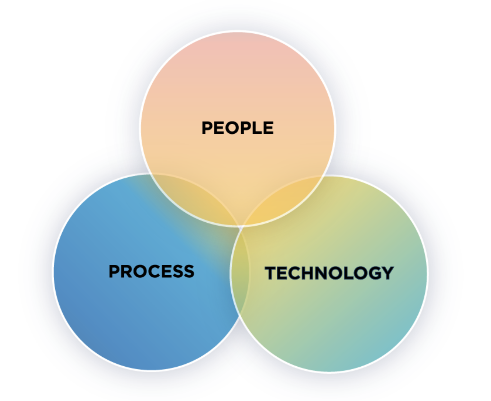
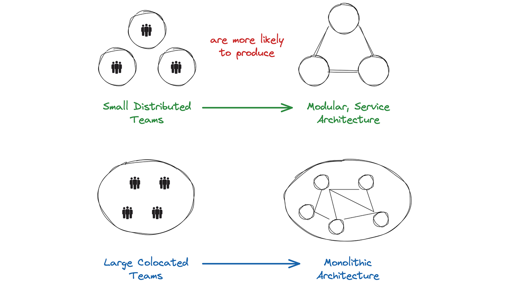
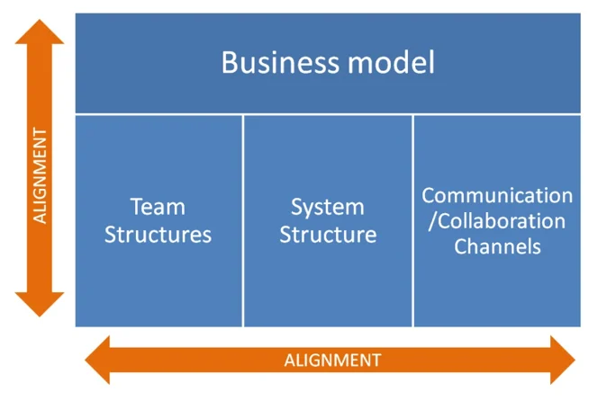
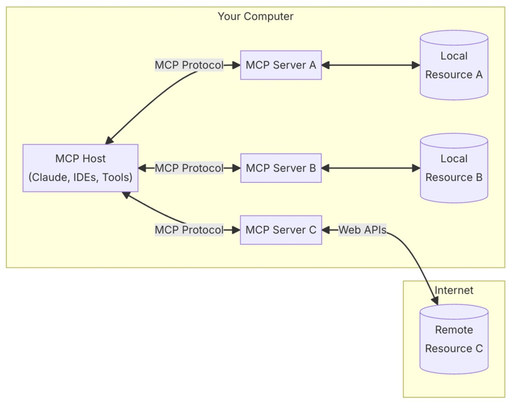

AI Tooling for Java Development

Who I am
|
Juan Antonio Breña Moral Engineering @ IG Group, EU Division
Twitter | Github | LinkedIn |
|
|
"Make it work, make it right, make it fast." - Kent Beck "Lead me, follow me, or get out of my way.", "Pressure makes diamonds." - George S. Patton Jr. |
|

Source: Leavitt's Alignment Model (1965) >> People, Process and Technology FrameworkAgenda (45 min)
- Conway's Law
- Building blocks in GenAI age
- Project types
- Modern Java SDLC
- Takeaways
Slides
jbang trust list
jbang cache clear
jbang catalog list jabrena
jbang qr-code@jabrena \
--url https://jabrena.github.io/plinth/jcconf-2026/

Conway's Law
"Organizations which design systems are constrained to produce designs which are copies of the communication structures of these organizations."

Conway's Law

Conway's Law
Maintain the communication between teams and teams members is fundamental.

Conway's Law
AI-Agent tools can help to accelerate the development but it is necessary to maintain cohesion and aligment with other systems and teams, to avoid the risk of creating a "Frankenstein" system.
Conway's Law
Architect roles has an excellent opportunity to improve "The eagle view skills" to review systems at scale to verify consistency and aligment.
Building blocks in GenAI age
- AGENTS.md
- Skills
- Commands
- Subagents
- MCP Severs
- SDD
AGENTS.md
An open and simple format to guide programming agents. Think of AGENTS.md as a README for agents: a dedicated and predictable place to provide the context and instructions to help AI coding agents work on your project.
https://agents.md/Skill
Skills are folders of instructions, scripts, and resources that AI tools load dynamically to improve performance on specialized tasks.
Skill
Skill folder structure:
skill-name/
├── SKILL.md # Required: metadata + instructions
├── scripts/ # Optional: executable code
├── references/ # Optional: documentation
├── assets/ # Optional: templates, resources
└── ... # Any additional files or directories
Skill
Where can you find Skills for Java?
https://skills.sh/Subagents
Subagents are specialized AI assistants that the Cursor agent can delegate tasks to. Each subagent operates in its own context window, handles specific types of work, and returns its result to the main agent.
https://cursor.com/docs/subagentshttps://code.claude.com/docs/en/sub-agents
MCP Severs

Model Context Protocol (MCP) is an open protocol that standardizes how applications provide context to LLMs.
Source: https://modelcontextprotocol.io/introductionMCP Severs
Think of MCP as a plugin system for Cursor:

Source: https://docs.cursor.com/context/model-context-protocolSDD
Spec-driven development (SDD) is a software engineering methodology where a formal, machine-readable specification serves as the authoritative source of truth and the primary artifact from which implementation, testing, and documentation are derived.
https://openspec.dev/https://github.github.com/spec-kit/
Project types
- Greenfield
- Brownfield
- Legacy
Project types
Greenfield
New project, no constraints from previous work.
- New AGENTS.md
- New OpenSpec project
Project types
Brownfield
Existing project, with constraints from previous work.
- Review potential gaps in Specs from OpenSpec
- Review missing parts in AGENTS.md
Project types
Legacy
Older project, with significant technical debt and outdated architecture.
A real engineering challenge to backfill the missing parts in the project, like documentation, missing tests, etc...
Modern Java SDLC

Modern Java SDLC
Every issue requires Functional & Technical specifications:
Issue
|
v
/update-issue --> /explore-problem --> /create-acceptance-criteria
|
v
/create-spec --> /explore-design
|
v
/implement-spec --> /close-spec
Modern Java SDLC
PENDING TO TALK ABOUT:
- Functional specifications
- Technical specifications
- Encapsulate knowledge in Skills
- Create your company ubicous language based on commands -> agents -> skills
References
🙏 🙏 🙏
Thanks